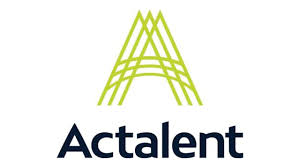

Position Opening
Location
New Orleans, Louisiana, USA
Job Title
Entry Level Engineer
Email:
careers@actalentservices.com
Contact information:
Application LinkSponsorship:
Yes
Stipend/Compensation:
Hourly: $30.00-$31.00
Job Descripition
Qualified candidates should have an engineering degree from an accredited ABET university. Ideally, candidates will experience in electrical engineering or mechanical engineering, though chemical or industrial engineering degrees are also acceptable. In this role, candidates will be responsible for performing analysis, staking, and pole relocation support for Utilities in the United States.
Required Skills
- Bachelor's degree in Engineering (ideally Electrical or Mechanical Engineering, but open to other disciplines) from an ABET accredited university.
- Experience with Microsoft Office applications (Excel, Word, PowerPoint).
- Strong communication and initiative skills.
- Ability to travel into the office 5 days per week, with potential for a hybrid schedule after 6 months based on performance.
- Open to traveling 5-10% of the time for project staking.